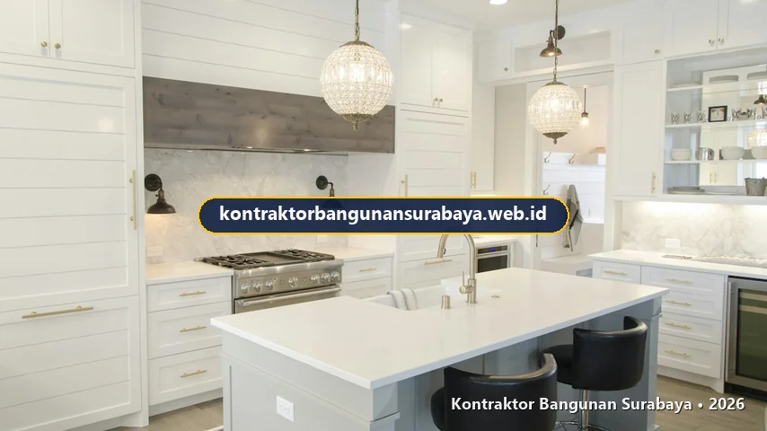

1. Tips Memilih Vendor Interior dan Kitchen Set Terpercaya
Bagaimana cara memilih vendor interior dan kitchen set yang terpercaya?
Memilih vendor interior dan kitchen set yang terpercaya melibatkan pengecekan portofolio hasil kerja sebelumnya, kejelasan garansi produk dan pemasangan, serta transparansi RAB per item pekerjaan sebelum kesepakatan kerja dimulai. kontraktorbangunansurabaya.web.id menerapkan standar kerja ini untuk memberikan kepastian yang lebih besar kepada pemilik rumah di Surabaya yang sedang mencari vendor interior.
Investasi pada perabot custom seperti lemari dapur (kitchen set), backdrop TV, wardrobe, maupun partisi ruangan merupakan bagian krusial dalam menyempurnakan kenyamanan hunian. Kesalahan dalam memilih vendor tidak hanya berisiko pada estetika yang mengecewakan, tetapi juga menimbulkan kerugian finansial akibat penggunaan material di bawah standar, sambungan yang cepat renggang, atau engsel yang mudah rusak dalam hitungan bulan.
Standar Kualitas Interior Hunian Modern
Pemilihan workshop terpercaya dengan dukungan tim teknis berpengalaman menjamin hasil pengerjaan custom furniture yang presisi, awet, dan serasi dengan layanan menyeluruh interior dan finishing bangunan di Surabaya.
2. Mengecek Portofolio dan Kualitas Hasil Kerja Sebelumnya
Portofolio yang ditunjukkan sebaiknya mencakup foto detail seperti kerapian sambungan panel, kualitas finishing tepi, dan kerapihan aksesoris seperti engsel dan rel laci, bukan hanya foto tampilan keseluruhan yang terlihat bagus dari jarak jauh namun kurang detail dari dekat.
Meminta contoh material fisik (sample) sebelum memutuskan, alih-alih hanya melihat gambar atau katalog digital, juga membantu memastikan warna dan tekstur material sesuai ekspektasi, karena tampilan warna pada layar tidak selalu identik dengan warna aslinya.
| Aspek Pemeriksaan Portofolio | Kriteria Vendor Profesional | Risiko Jika Vendor Amatir |
|---|---|---|
| Sambungan Edging & Panel | Garis sambungan rata, sudut tidak tajam, tidak ada sisa lem menempel | Lapisan HPL mudah terkelupas dan tepi panel cepat sompel |
| Kualitas Aksesoris (Hardware) | Menggunakan engsel slow-motion dan rel laci tandem bermerek teruji | Pintu kabinet berbunyi decit, turun, dan laci macet saat ditarik |
| Penyediaan Sampel Fisik | Menyediakan katalog fisik HPL, sampel multiplek, dan potongan table top | Warna asli meleset jauh dari render 3D di layar monitor |
| Penanganan Sudut Ruangan | Mampu mengukur ruangan non-siku dengan akurat dan modul custom | Terdapat celah kosong berdebu antara kabinet dan dinding rumah |
Kunjungan langsung ke proyek yang sedang atau baru selesai dikerjakan, apabila memungkinkan, memberikan gambaran yang lebih akurat mengenai kualitas kerja vendor dibanding hanya melihat foto atau katalog yang ditampilkan secara daring.
Menanyakan pengalaman vendor menangani proyek dengan tingkat kesulitan serupa, misalnya ruangan dengan sudut tidak siku atau plafon miring, juga membantu menilai kesiapan vendor menangani tantangan teknis yang mungkin muncul pada proyek milik Anda.
3. Kejelasan Garansi Produk dan Layanan Purna Jual
Garansi yang ditawarkan sebaiknya mencakup baik garansi material, seperti daya tahan HPL dari pengelupasan, maupun garansi pemasangan, seperti kekuatan sambungan dan fungsi aksesoris seperti engsel dan rel laci dalam periode tertentu setelah pemasangan selesai.

Kejelasan mengenai prosedur klaim garansi, termasuk berapa lama waktu respons yang dijanjikan apabila terjadi masalah, juga menjadi pertimbangan penting, karena vendor yang baik biasanya memiliki alur klaim yang jelas dan tidak berbelit-belit.
Langkah Tepat (Do's)
- Minta Garansi Tertulis: Pastikan durasi garansi material dan pemasangan tertulis jelas dalam SPK.
- Tanyakan Contact Person Khusus: Vendor terpercaya memiliki tim purna jual (customer service) yang responsif.
- Periksa Ulasan Klien Terdahulu: Lihat ulasan riil di Google Maps atau portofolio media sosial vendor.
- Simpan Dokumen Gambar Kerja: Simpan salinan DED interior untuk memudahkan penyesuaian di masa depan.
Hindari Hal Ini (Don'ts)
- Hanya Mengandalkan Janji Lisan: Garansi lisan tanpa klausul tertulis seringkali diabaikan saat terjadi kendala.
- Tergiur Harga Jauh di Bawah Pasar: Harga terlalu murah umumnya mengorbankan ketebalan plywood dan mutu lem HPL.
- Membayar Penuh di Awal: Terapkan sistem pembayaran bertahap (termin) sesuai progres perakitan dan pemasangan fisik.
- Mengabaikan Jalur Instalasi MEP: Memasang kitchen set tanpa memetakan pipa air dan stop kontak listrik.
Ulasan atau testimoni dari klien sebelumnya, baik secara langsung maupun melalui platform digital, juga dapat menjadi bahan pertimbangan tambahan, khususnya untuk menilai konsistensi kualitas dan ketepatan waktu penyelesaian proyek oleh vendor tersebut.
4. Transparansi RAB dan Proses Kerja Bersama kontraktorbangunansurabaya.web.id
RAB yang transparan per item pekerjaan, mencakup material, ukuran, dan aksesoris yang digunakan, membantu pemilik rumah memahami dengan jelas apa yang akan mereka dapatkan, dibanding penawaran dengan harga borongan tanpa rincian yang jelas.
kontraktorbangunansurabaya.web.id menerapkan proses kerja yang transparan mulai dari survei ukuran, penawaran RAB terperinci, hingga proses produksi dan pemasangan, sehingga pemilik rumah dapat memantau setiap tahap pengerjaan interior dan kitchen set yang dipesan.
Alur Standar Kerja Interior di kontraktorbangunansurabaya.web.id
- Survei & Pengukuran Akurat: Pengecekan dimensi ruangan dan jalur pipa/listrik menggunakan laser meter.
- Desain 3D & Pemilihan Material: Visualisasi 3D mendetail dan pemilihan sampel warna HPL bersama klien.
- RAB Transparan Terperinci: Penjabaran rincian spesifikasi kayu olahan, merek hardware, dan biaya tanpa markup tersembunyi.
- Pabrikasi Workshop Terkontrol: Pemotongan presisi dan laminasi di bengkel produksi guna menjaga kebersihan rumah klien.
- Instalasi & Quality Control: Pemasangan di lokasi oleh teknisi ahli serta pengujian fungsi seluruh engsel dan laci.
- Serah Terima & Sertifikat Garansi: Penyerahan hasil akhir bersih beserta dokumen garansi pemeliharaan resmi.
Kesepakatan tertulis mengenai jadwal pemasangan dan konsekuensi apabila terjadi keterlambatan juga sebaiknya dicantumkan sejak awal, agar ada kejelasan tanggung jawab apabila pengerjaan tidak selesai sesuai jadwal yang telah disepakati bersama.
Sebelum memilih vendor, ada baiknya memahami dahulu konsep desain yang diinginkan. Baca kembali panduan mengenai desain rumah minimalis modern agar kebutuhan interior Anda lebih terarah saat berdiskusi dengan vendor.
5. FAQ Seputar Vendor Interior & Kitchen Set
Konsultasi Gratis Sekarang
Ingin berdiskusi lebih lanjut mengenai kebutuhan konstruksi bangunan Anda di Surabaya? Hubungi tim kami melalui WhatsApp di 0889-8964-3555 untuk konsultasi awal tanpa biaya bersama kontraktorbangunansurabaya.web.id.
Konsultasi WhatsApp di 0889-8964-3555
Reza Maulana Nehru
Praktisi & Penulis Edukasi Konstruksi Bangunan di Kontraktor Bangunan Surabaya. Berfokus pada pemilihan vendor interior profesional, pembuatan kitchen set custom berkualitas, kalkulasi RAB transparan, dan standarisasi pengerjaan interior di Surabaya.